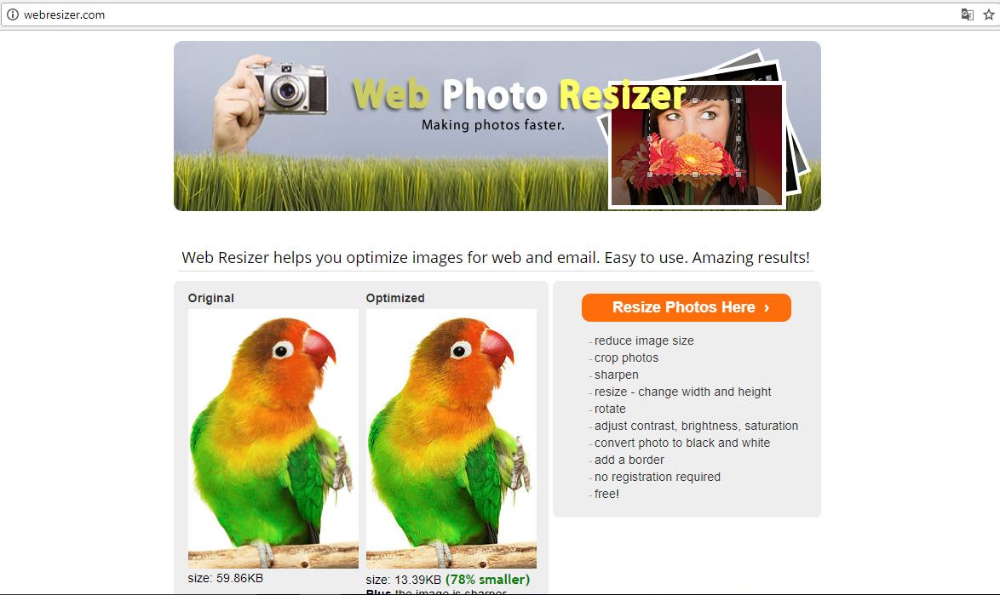
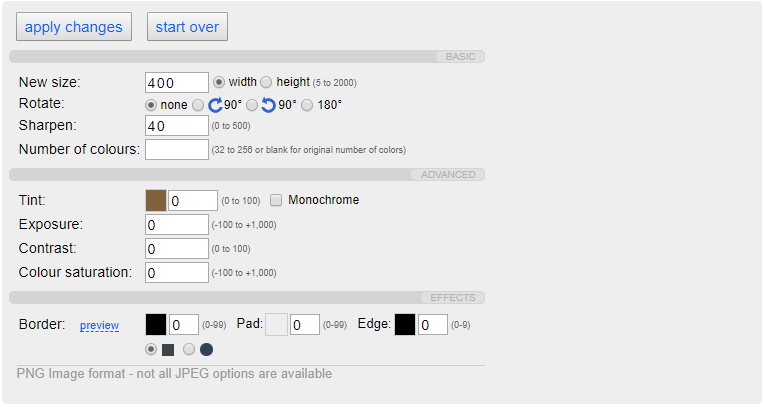
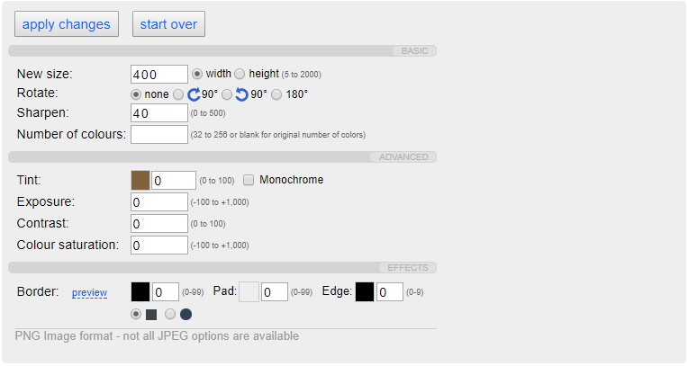
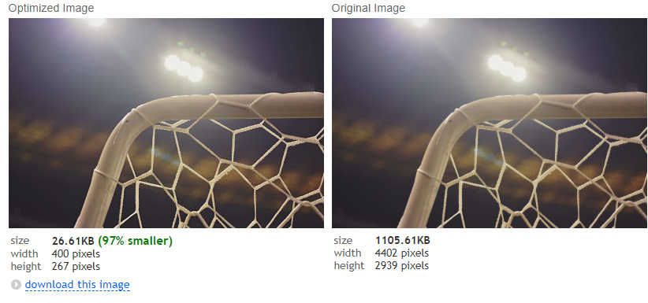
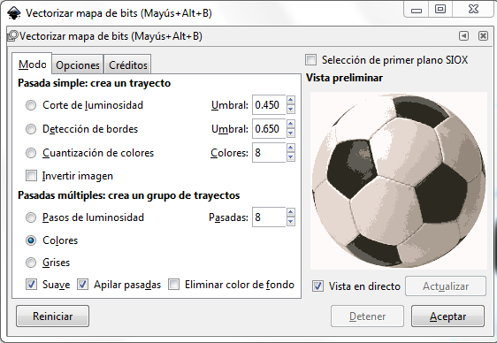
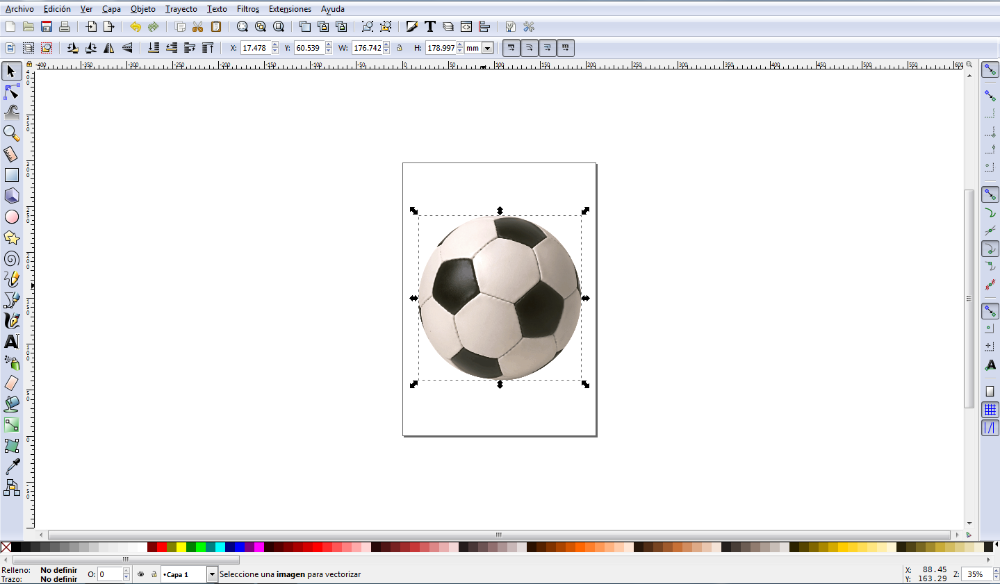
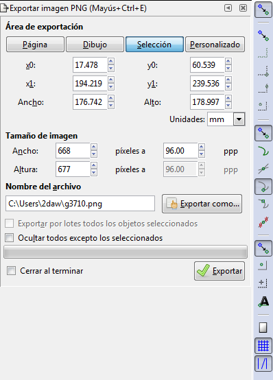
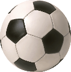
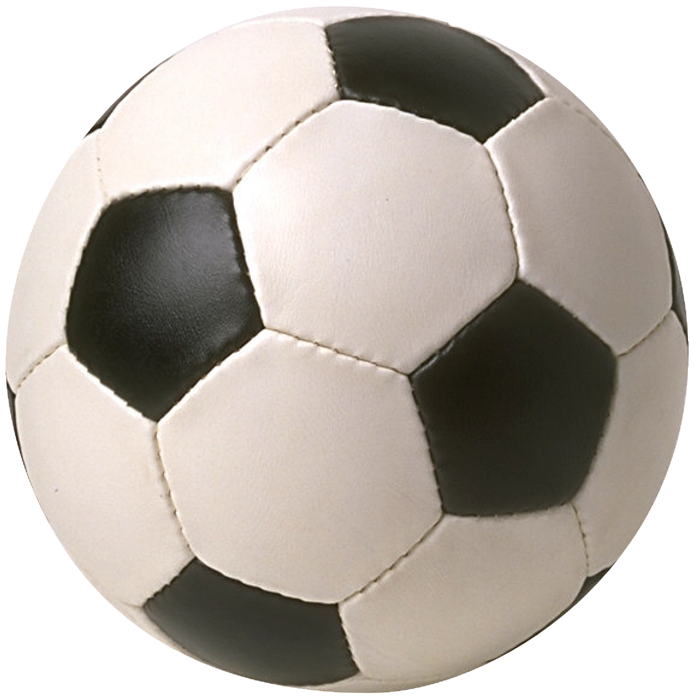

A priori las dos imágenes que se ven parecen la misma imagen. Pero no es así, la primera de ellas esta optimizada para que el espacio que ocupa sea menor y conseguir con esto que nuestras páginas web ocupen menos espacio y su tiempo de carga sea menor.
Por lo que se puede apreciar la primera imagen no ha perdido calidad respecto a la segunda. En cuanto al tamaño de la imagen en lo que se refiere a espacio que ocupa en nuestra página web se ha reducido considerablemente.
Tamaño de la imagen sin optimizar(imagen 2) : 687.30KB
Tamaño de la imagen optimizada(imagen 1): 56.78KB
Hemos realizado un estudio de cuanto tiempo tardan en cargar nuestras imagenes, con las dos imagenes mostradas anteriormente. La imagen sin optimizar tardaria 27 ms en cargar en nuestra pagina. Sin embargo, la imagen optimizada solo tardaria 6 ms en cargar. Reduciendo el tiempo de carga en un 75 %.Con lo cual una de la ventajas de optimizar imagenes es el tiempo de carga de nuestras paginas que con imagenes optimizadas seria mucho menos que con imagenes normales.
Para optimizar nuestras imágenes hemos utilizado la página web Web resizer. En ella podemos cambiar el tamaño de la imagen, rotarla, cambiarle el contraste, la saturación del color etc.
A continuacion mostraremos los pasos a seguir para optimizar una imagen:
Paso 1: Entramos en la pagina y seleccionamos la parte marcada en rojo en la imagen
Paso 2: Seleccionamos la imagen que queremos optimizar pinchando en seleccionar archivo y cuando la tengamos seleccionada pinchamos en upload image.
Aparece nuestra imagen y al lado la imagen optimizada por defecto. Si bajamos un poco podremos optimizarla a nuestro gusto.
 

Paso 3: Descargamos la imagen pinchado en DOWNLOAD THIS IMAGE.
| Nombre de la imagen | Antes | Despues | Fuente |
|---|---|---|---|
| Campo | 874.84KB | 27KB | https://stocksnap.io/photo/LHHL7FKKVD |
| Campo2 | 4233.82KB | 57.62KB | https://stocksnap.io/photo/KTQZYM7YXM |
| Portería | 1105.61KB | 26.61KB | https://stocksnap.io/photo/1IIEPDOFFI |
| Cachorros | 687.30KB | 56.78KB | Imagen propia |
| España | 880.37KB | 52.84KB | Imagen propia |
| Arbitro | 3657.41KB | 43.19KB | https://stocksnap.io/photo/3SYBQO3C58 |
| Rugby | 9812.50KB | 99.65KB | https://stocksnap.io/photo/HWDNFMZHRP |
| Futbolín | 2034.11KB | 19.14KB | https://stocksnap.io/photo/79D5XRLWLJ |
| Vestuario | 772.01KB | 11.12KB | https://stocksnap.io/photo/ZIS75NJPCB |
La vectorización de iconos la hemos realizado con el programa Inkcape. A continuación explicaremos los pasos a seguir para vectorizar un icono.
Paso 1: Abrimos el programa Inkscape e importamos la imagen que queremos vectorizar. En la barra de herramientas seleccionamos Trayecto > Vectorizar mapa de bits. A continuación aparecera la ventana que se muestra en la imagen.
Paso 2: Dentro de la ventana mencionada anteriormente prodremos cambiar el corte de luminosidad el deteccion de bordes, poner nuestro icono en el color original, ponerlo en blanco y negro etc.
Paso 3: Una vez elegidos los cambios que queremos dar a nuestro icono pulsamos aceptar y aparece nuestro icono vectorizado en la pantalla de Inkcape.
Paso 4: Una vez realizados los pasos anteriores, vamos a la barra de herramientas y pulsamos Archivo > Exportar imagen PNG. Aparecera a la izquierda de nuestra pantalla la imagen mostrada a continuación.
Paso 5: Seleccionamos el tamaño que deseemos para nuestro icono, la carpeta en la que lo queremos guardar y pulsamos exportar. Ya tendremos nuestro icono vectorizado y optimizado.
A continuación mostraremos los iconos, el primero esta vectorizado y el segundo es la imagen real. Se puede apreciar que los 2 tienes la misma calidad pero el primero solo tiene un tamaño de almacenamiento de 22 KB y nuestra imagen real(imagen 2) tiene un tamaño de 1215 KB.  
Al hacer de nuevo el estudio de los tiempos de carga de las imagenes, comprobamos con los logos de los balones de futbol, que el icono sin optimizar tarda 43 ms, sin embargo el icono optimizado solo tarda en cargar 16 ms.